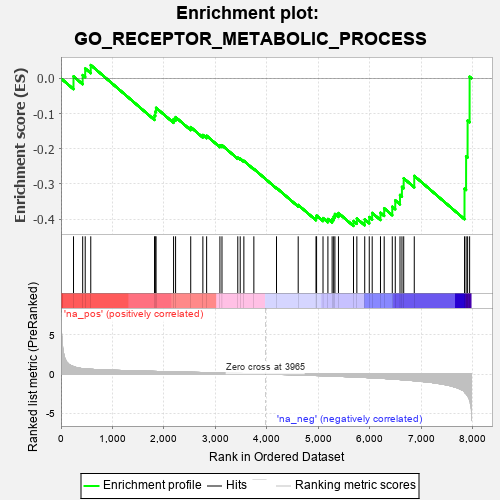
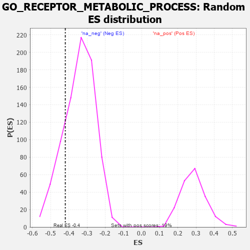

| | | Dataset | 7d |
| Phenotype | NoPhenotypeAvailable |
| Upregulated in class | na_neg |
| GeneSet | GO_RECEPTOR_METABOLIC_PROCESS |
| Enrichment Score (ES) | -0.4193829 |
| Normalized Enrichment Score (NES) | -1.2230742 |
| Nominal p-value | 0.191067 |
| FDR q-value | 0.59602636 |
| FWER p-Value | 1.0 |
Table: GSEA Results Summary

Fig 1: Enrichment plot: GO_RECEPTOR_METABOLIC_PROCESS
Profile of the Running ES Score & Positions of GeneSet Members on the Rank Ordered List
| PROBE | GENE SYMBOL | GENE_TITLE | RANK IN GENE LIST | RANK METRIC SCORE | RUNNING ES | CORE ENRICHMENT | | 1 | NSF | | | 243 | 0.947 | 0.0056 | No |
| 2 | CNPY2 | | | 421 | 0.680 | 0.0094 | No |
| 3 | LRP1 | | | 470 | 0.648 | 0.0282 | No |
| 4 | MX1 | | | 578 | 0.604 | 0.0378 | No |
| 5 | FMR1 | | | 1816 | 0.334 | -0.1054 | No |
| 6 | UVRAG | | | 1831 | 0.332 | -0.0945 | No |
| 7 | AP2S1 | | | 1846 | 0.329 | -0.0837 | No |
| 8 | SYK | | | 2186 | 0.278 | -0.1158 | No |
| 9 | MYLIP | | | 2225 | 0.272 | -0.1102 | No |
| 10 | NUMB | | | 2519 | 0.224 | -0.1385 | No |
| 11 | FNTA | | | 2755 | 0.190 | -0.1609 | No |
| 12 | BECN1 | | | 2828 | 0.179 | -0.1631 | No |
| 13 | HDAC1 | | | 3086 | 0.138 | -0.1902 | No |
| 14 | MTMR2 | | | 3126 | 0.133 | -0.1900 | No |
| 15 | AP2A2 | | | 3433 | 0.085 | -0.2254 | No |
| 16 | CDK5 | | | 3480 | 0.080 | -0.2281 | No |
| 17 | FUT8 | | | 3551 | 0.067 | -0.2344 | No |
| 18 | HTR1B | | | 3745 | 0.035 | -0.2574 | No |
| 19 | AP2B1 | | | 4185 | -0.039 | -0.3112 | No |
| 20 | SNX25 | | | 4606 | -0.119 | -0.3597 | No |
| 21 | CHMP5 | | | 4952 | -0.188 | -0.3960 | No |
| 22 | ARAP1 | | | 4963 | -0.191 | -0.3899 | No |
| 23 | DRD2 | | | 5088 | -0.221 | -0.3971 | No |
| 24 | HDAC6 | | | 5183 | -0.244 | -0.3996 | No |
| 25 | PICK1 | | | 5265 | -0.263 | -0.3997 | No |
| 26 | MAGI2 | | | 5295 | -0.269 | -0.3930 | No |
| 27 | CD9 | | | 5319 | -0.277 | -0.3853 | No |
| 28 | DLG4 | | | 5388 | -0.293 | -0.3827 | No |
| 29 | CD63 | | | 5680 | -0.370 | -0.4052 | Yes |
| 30 | MX2 | | | 5745 | -0.390 | -0.3983 | Yes |
| 31 | VLDLR | | | 5898 | -0.434 | -0.4009 | Yes |
| 32 | SCAP | | | 5986 | -0.466 | -0.3940 | Yes |
| 33 | VAMP3 | | | 6043 | -0.487 | -0.3824 | Yes |
| 34 | INSR | | | 6204 | -0.538 | -0.3819 | Yes |
| 35 | FLOT1 | | | 6276 | -0.564 | -0.3693 | Yes |
| 36 | ABCA2 | | | 6433 | -0.634 | -0.3647 | Yes |
| 37 | WDR54 | | | 6491 | -0.658 | -0.3467 | Yes |
| 38 | ARF1 | | | 6583 | -0.701 | -0.3313 | Yes |
| 39 | SCYL2 | | | 6621 | -0.724 | -0.3082 | Yes |
| 40 | RAB5A | | | 6655 | -0.741 | -0.2839 | Yes |
| 41 | AHI1 | | | 6860 | -0.848 | -0.2772 | Yes |
| 42 | GRIA1 | | | 7836 | -2.260 | -0.3136 | Yes |
| 43 | ECE1 | | | 7867 | -2.498 | -0.2216 | Yes |
| 44 | CAV3 | | | 7896 | -2.739 | -0.1201 | Yes |
| 45 | ARRB1 | | | 7935 | -3.377 | 0.0045 | Yes |
Table: GSEA details [plain text format]

Fig 2: GO_RECEPTOR_METABOLIC_PROCESS: Random ES distribution
Gene set null distribution of ES for GO_RECEPTOR_METABOLIC_PROCESS